Batch Image Kit · 21 octubre 2026
AdSense donde la gente realmente trabaja.
Objetivo: más impresiones visibles por sesión. Se prepararon espacios en Home, las cuatro tools básicas, los once generadores de assets, el directorio, las guías y el Workspace. La integración permanece desactivada hasta disponer de la cuenta, los bloques y el consentimiento de Google. Las capturas de la implementación usan anuncios de prueba locales: no generan impresiones ni ingresos.
Benchmark observado, no estimado
Inspección directa en navegador, sin iniciar sesión en los competidores ni hacer clic en anuncios. Escritorio: viewport 1280 × 720 CSS px. Móvil: 390 × 844 CSS px en ResizePixel. Las medidas corresponden al iframe o contenedor visible, no necesariamente al creativo comprado. La publicidad puede cambiar según país, consentimiento, subasta, dispositivo y momento. No tenemos acceso a sus impresiones, RPM ni porcentajes de visibilidad; estos ejemplos muestran ubicaciones, no demuestran su rentabilidad ni confirman que todos utilicen AdSense en lugar de Ad Manager u otra red.
| Servicio y página | Observación real | Qué trasladamos a Batch |
|---|---|---|
| ImageResizer · entrada/tool | 728 × 90 en y≈190; dos 160 × 600 a los lados del cargador, desde y≈300; otro 728 × 90 en y≈1389. Creativos visibles. | Un anuncio junto al área de trabajo tiene oportunidad de ser visto mientras se usa la herramienta. No copiamos ambos laterales: consumirían demasiado ancho en nuestro Workspace. |
| ResizePixel · Home | Contenedor horizontal ≈769 × 91 en y≈552. En móvil: 320 × 50 en y≈687, después del botón de carga. | Primer anuncio cerca del final de la primera pantalla, con la acción principal antes. |
| ResizePixel · editor de muestra | 300 × 250 en la columna de ajustes, x≈145, y≈351. Vista previa grande a la derecha. | Rectángulo 300 × 250 en las landings de tools, con separación clara de los controles. La observación de un competidor no equivale a aprobación de Google. |
| Bulk Resize Photos · entrada | 300 × 250 bajo la carga, desde y≈374; otro iframe ≈970 × 100 en el borde inferior de la ventana. | La carga queda accesible y el anuncio aparece inmediatamente después. Posponemos overlays hasta medir si interfieren con las acciones. |
| iLoveIMG · Home y resize | No se observaron anuncios visibles ni iframes publicitarios con dimensiones en estas visitas. | Referencia de claridad de navegación; no afirmamos que el servicio nunca muestre publicidad. |
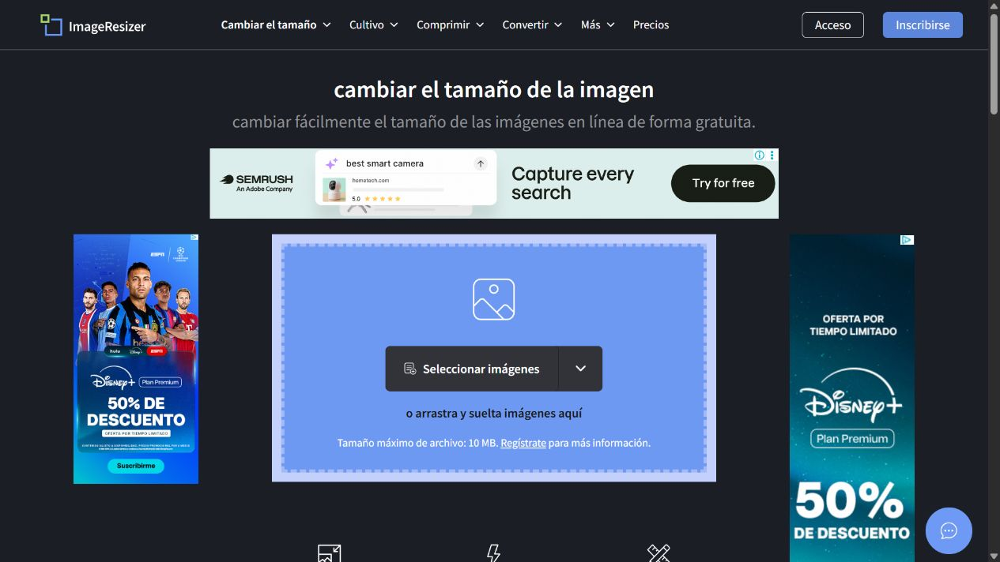
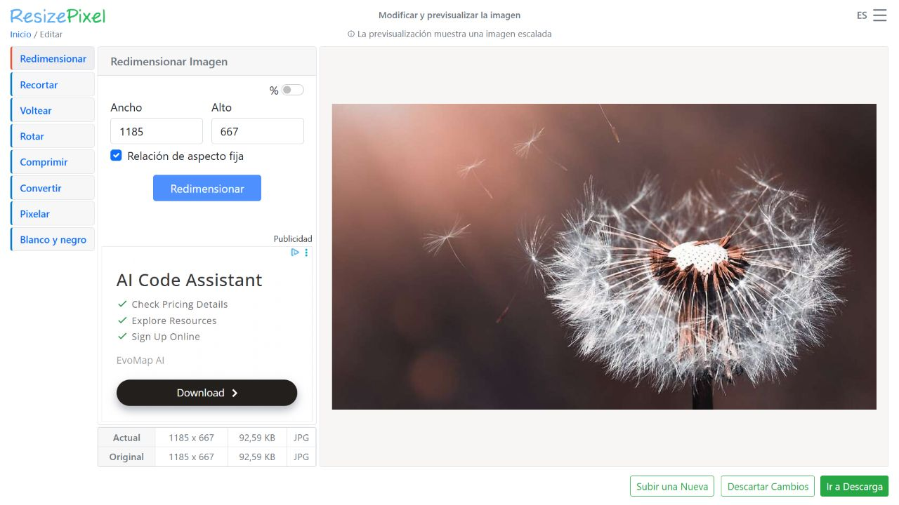
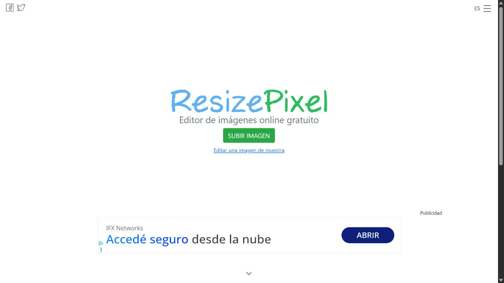
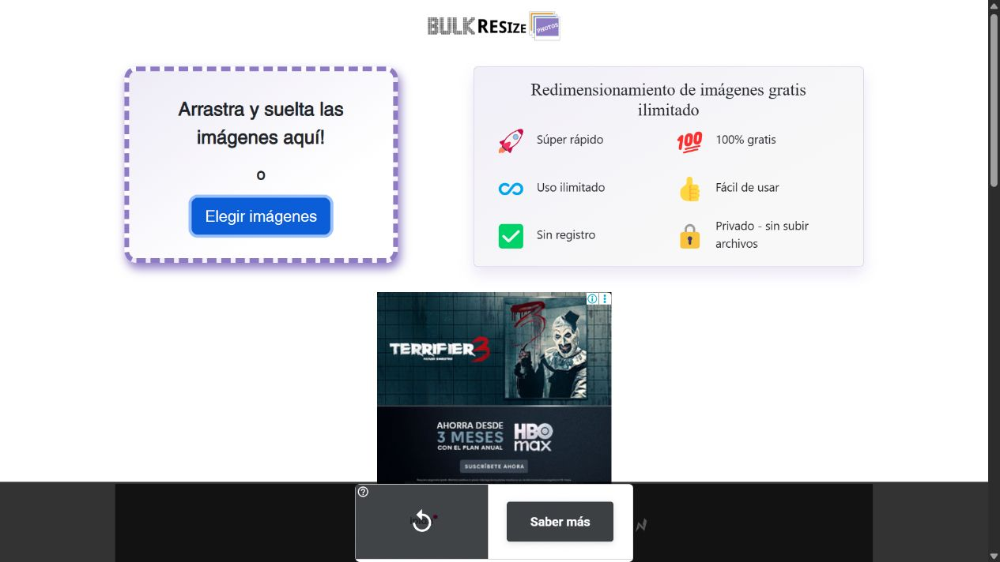
Por qué estas posiciones
En Batch, antes del cambio, el espacio de la Home comenzaba en y≈1513 y el de resize en y≈1112, fuera de una pantalla de 720 px. Compactar la portada y adelantar el primer bloque es una mejora concreta de oportunidad de exposición. En la implementación local, el creativo de la Home comienza en y≈613 y mide 728 × 90; queda completamente dentro del viewport de 1280 × 720. El de resize comienza en y≈493 y mide 300 × 250: alrededor del 91% de su altura entra en esa primera pantalla. Son medidas geométricas, no métricas Active View.
Google considera visible una impresión display cuando al menos el 50% de los píxeles permanece en pantalla un segundo continuo. Por eso evaluaremos visibilidad y uso de la herramienta, además del número de anuncios solicitados. Fuente: buenas prácticas de visibilidad de AdSense.
Mapa de espacios preparado
| Página | Posición | Escritorio | Móvil | Decisión |
|---|---|---|---|---|
| Home | Después del bloque principal, antes de la explicación; segundo después de los tres pasos. | 728 × 90 + 970 × 250 | 320 × 100 + 300 × 250 | Dos oportunidades en momentos de lectura distintos. El primer bloque móvil precede la demostración visual larga. |
| Resize, Compress, Convert, Rename | Al lado del cargador, bajo resumen de ajustes; segundo tras explicación y pasos. | 300 × 250 + 728 × 90 | 320 × 100 tras el cargador + 300 × 250 tras los pasos | Prioridad a la tool que recibe tráfico de búsqueda; sin anuncios dentro de los campos. |
| Steam y diez kits de plataformas | Tras introducción, antes del módulo; segundo después de la guía integrada. | 728 × 90 + 970 × 250 | 320 × 100 + 300 × 250 | Bloques fuera de la grilla de assets, modales y barra de exportación. |
| Workspace de las cuatro tools | Fila propia bajo la grilla, termina antes de la columna de ajustes. | 728 × 90, solo desde 1280 px de ancho y 700 px de alto. | Sin anuncio durante la edición. | Aprovecha el tiempo de trabajo sin superponer elementos. Validar elegibilidad y datos de uso antes de activar. |
| Resultados | Después de resultados y acciones, solo con archivos completados. | 300 × 250 | 300 × 250 | Descarga disponible antes; sin intersticial ni cuenta regresiva. |
| Directorio de tools | Después de las cuatro herramientas principales; oculto al filtrar. | 728 × 90 | 300 × 250 | Mucho más arriba que el final de los quince productos. |
| Guías | Columna lateral en escritorio; entre secciones en móvil/tablet. | 300 × 600 estático desde 1280 px. | 300 × 250 en móvil y tablet, para respetar la columna de lectura. | Un espacio por lectura; el lateral no flota ni tapa texto. |
| Centro de ayuda | Tras contenido útil. | 728 × 90 | 300 × 250 | Secundario frente a las páginas de herramientas. |
| Legal, 404, revisión y procesamiento | Sin bloques publicitarios. | — | — | Evitar interrupciones y páginas sin contenido publicitario apropiado. |
Los tamaños son de contenedor. No se estira un creativo: AdSense selecciona la demanda adecuada. En tablet el billboard baja a 728 × 90; en pantallas muy estrechas se usa un contenedor personalizado de 280 px. Las reglas adaptables siguen las modificaciones documentadas por AdSense. El inventario disponible depende de cada subasta.
Capturas de la implementación
Estas son capturas reales del sitio local con el modo de prueba activado. Las etiquetas y el fondo azul solo se muestran en desarrollo.
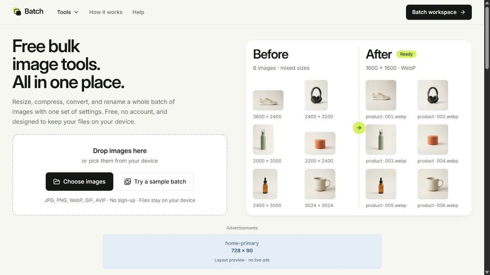
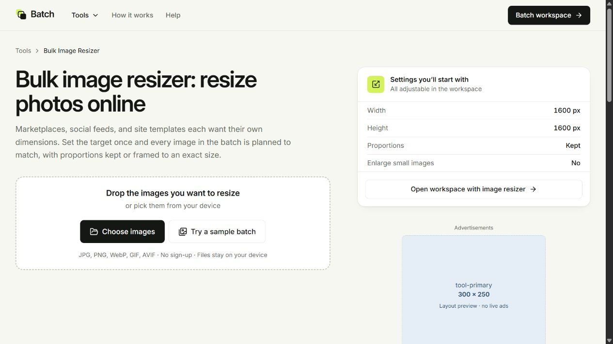
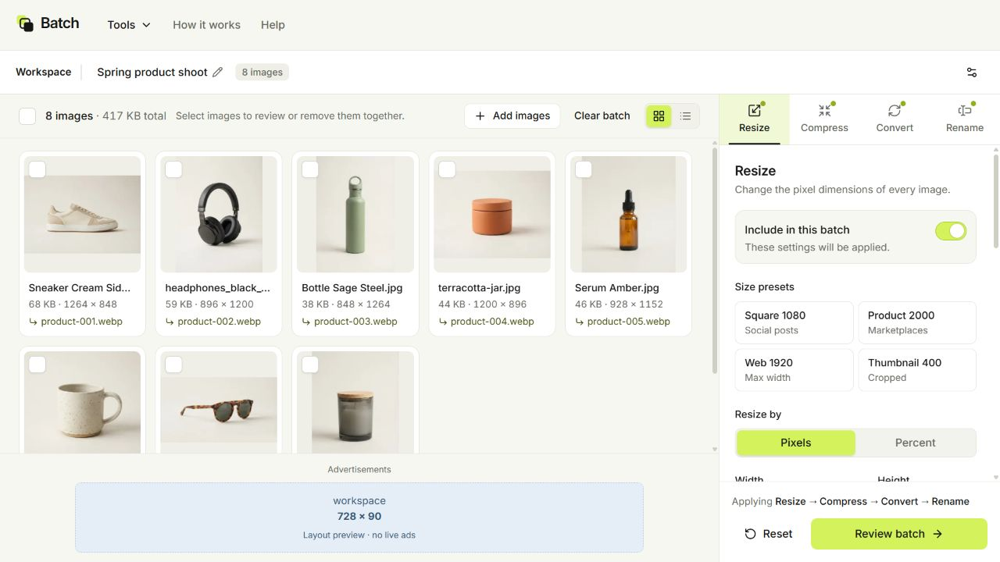
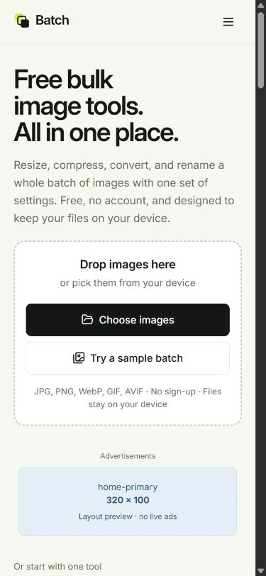
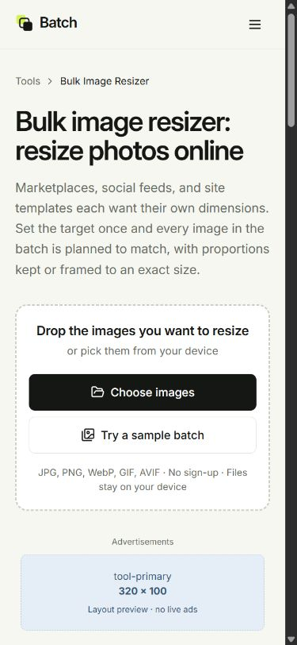
Ver las propuestas conceptuales iniciales
Generadas con ImageGen a partir del sitio. Ilustran ubicación y estilo, no son planos a escala; los tamaños exactos se verifican en las capturas implementadas y la tabla anterior. Los prompts están guardados junto a las imágenes.
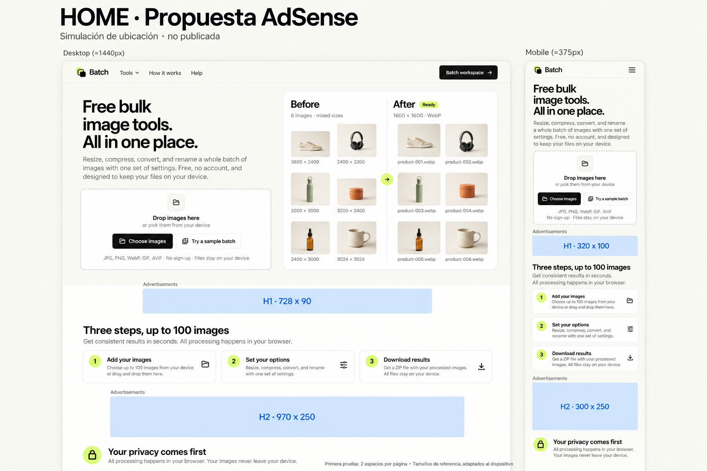
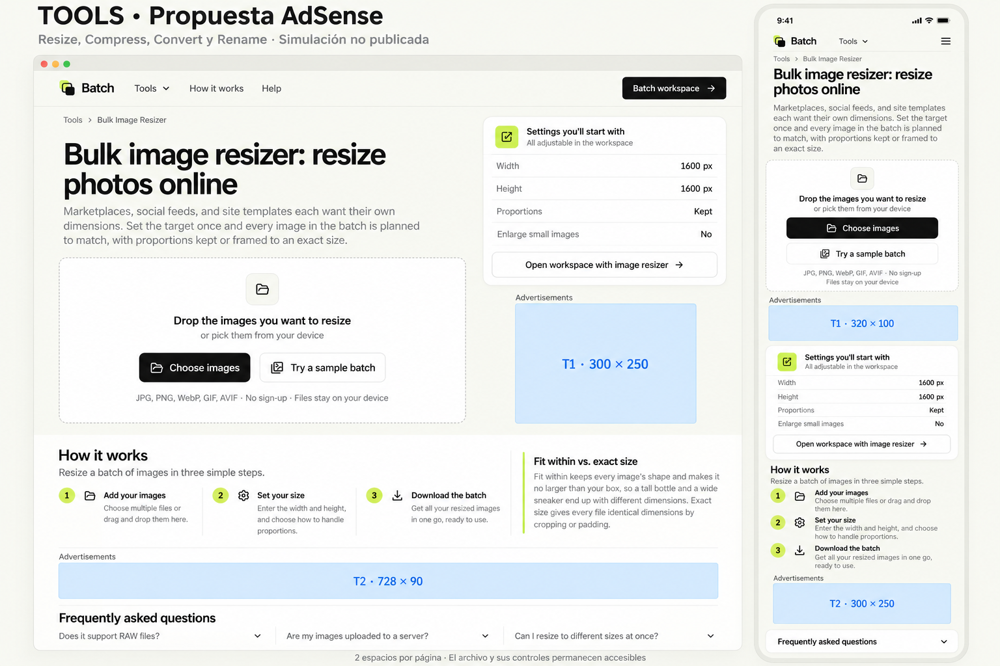
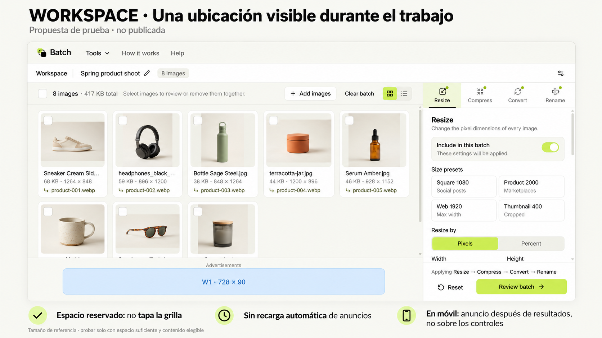
Configuración y activación
Se centralizaron doce ubicaciones en src/config/advertising.json. El código carga un único SDK, solicita cada bloque una vez cuando está próximo a la pantalla y nunca lo refresca por temporizador, por editar un ajuste ni por avanzar el procesamiento. Los hosts locales y las vistas previas de Cloudflare no sirven anuncios reales. No se envían imágenes ni nombres de archivos como parámetros publicitarios.
Se conectó el editor real pub-6613900279618437 y se crearon los doce bloques display adaptables. La etiqueta de verificación y /ads.txt están publicados. Google confirmó la propiedad del dominio y aceptó la revisión; el estado es Preparando. Los anuncios siguen desactivados durante la revisión. Google también debe aprobar el sitio.
Configuración guardada para Batch: Auto ads y optimización automática desactivados. Mensajes europeos y estadounidenses publicados exclusivamente para batchimagekit.com, con rechazo directo en Europa y exclusión en todos los estados admitidos por Google. Privacidad y Condiciones completadas con el nombre y contacto autorizados. El SDK de Google puede gestionar consentimiento mientras las ubicaciones publicitarias permanecen desactivadas. No se interpreta una preferencia del prototipo como consentimiento de Google. Configuración del mensaje de Google.
Los anuncios de anclaje y laterales automáticos son una segunda prueba posible en Home y páginas editoriales, no parte de esta activación inicial. Google administra sus dimensiones y cierre: no se implementan como un banner casero pegado a la pantalla. Anchor ads · Side rails.
Cómo decidir si funciona
Medir por bloque, familia de página y dispositivo: impresiones, Active View, cobertura, RPM de página y sesiones que completan una descarga. Primero observar una semana completa con volumen suficiente; si el tráfico es bajo, extender la prueba. Después comparar una variable a la vez: por ejemplo, H2 970 × 250 frente a 728 × 90, o agregar un anchor oficial en páginas públicas. La duración por sí sola no demuestra un ganador.
La oportunidad aproximada es: sesiones × páginas por sesión × bloques realmente cargados × cobertura × proporción visible. No conocemos todavía esos valores de Batch, por lo que no corresponde prometer un porcentaje de crecimiento o ingresos. Un bloque que aumenta solicitudes pero reduce visibilidad o finalización del trabajo puede empeorar el resultado.
No habrá clics inducidos, recarga automática ni descargas condicionadas a ver publicidad. La separación debe revisarse con anuncios reales porque un creativo puede incluir su propio botón. Políticas de ubicación de AdSense.
Verificación de la preparación
50 pruebas correctas, TypeScript y revisión de código sin errores. Build y auditoría SEO correctos: 27 páginas públicas y 20 internas. Comprobación visual en escritorio, móvil de 390 × 844 y guía en tablet de 820 px sin desbordamientos. Con las ubicaciones desactivadas no se renderizan bloques publicitarios. La configuración permite cargar el SDK de Google para comprobar los mensajes publicados. El despliegue f83eb09 se confirmó en Cloudflare. En el dominio se verificó la carga del SDK, cero ubicaciones manuales renderizadas y ausencia de errores de consola. Ambos mensajes figuran Publicados en AdSense, pero el aviso aún no apareció en la prueba oficial fc=alwaysshow; queda pendiente confirmar su entrega tras la propagación de Google. Siguen pendientes la aprobación del sitio y la renovación del formulario fiscal caducado del titular. No se han completado ni firmado datos fiscales por inferencia.
Open Graph
La tarjeta se simplificó a logo centrado y “Free Bulk Image Tools”, conservando 1200 × 630 y actualizando el texto alternativo social.